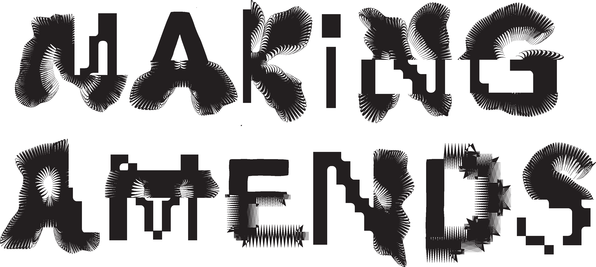

MESH MOSAIC
Cut by Diego Allison and Abbey Lehr

By using an array of existing crop tops, we began to stitch together the mosaic of pieces. The translucency of some of the mesh gives the patchwork a stained glass feel. We surged the pieces together with black thread for high contrast and intended to expose the raw edge on the outside of the garment. Currently, the pieces could work as a crop top or skirt, but we are excited to see it progress!